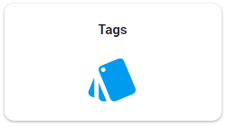
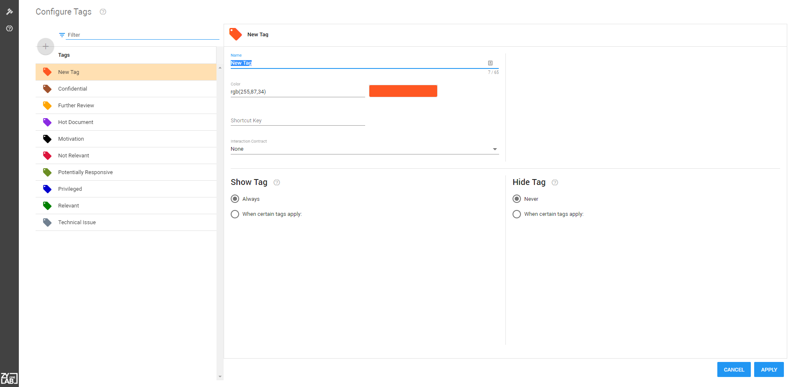
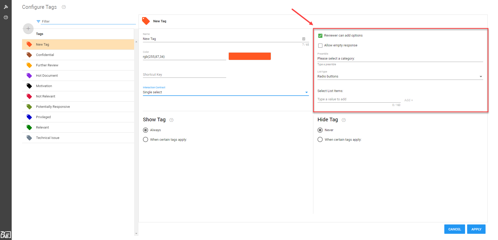
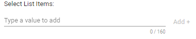
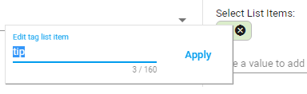

On the Home page, select Configuration.

Select Tags.

Select the plus icon.

The New Tag section appears.

Define a Name for the tag.
Use the Color picker to select a unique color for the tag.
Define a Shortcut Key for the tag. This should be a single letter (Alphanumeric, Arrow or Page buttons).
Select the Interaction Contract type. Choose from:
-
None: The tag will have no additional value.
-
Single select: The tag can be given one additional value.
-
Multi select: The tag can be given multiple additional values.
For Single select/Multi select, define your options as needed:

-
Reviewer can add options
If checked, users are allowed to add their own values to the tag. If not checked, create List Items users must choose from.
-
Allow empty response
If checked, users are not forced to add an additional value to the tag.
-
Preamble
Add a line to explain the options to your users.
-
Number of items to display (if using Multi select)
Set the Number of items to display to a maximum.
-
Select List Items
Define the tag options a user can choose from. Type a value to add and click Add +


Note: To edit a Tag List Item, select it. Modify the tag text or remove it by clicking the x. After you have defined a new tag, click Apply.

To remove the tag, click on the x in the green box.

Define when the tag is shown to the user.
-
Always show this tag
User always sees this tag.
-
When certain tags apply
User only sees this tag after he selected another tag.
-
All of these tag(s) apply
Only if all these tag(s) are selected first, new tag is shown.
For example, the user first selected the tag Privileged. After that, he can see the new tag.
-
And any of these tag(s) apply
And if one of these tag(s) are selected too, new tag is shown.
For example, the user first selected the tag Privileged, and also the tag German or French. Only after those two selections, he can see the new tag.
-
Define when the tag is hidden from the user.
-
Never hide this tag
User always sees this tag. -
When certain tags apply
User cannot see this tag after he selected another tag.-
All of these tag(s) apply
Only if all these tag(s) are selected first, new tag is hidden.
For example, the user first selected the tag Responsive. After that, the new tag is hidden and cannot be selected anymore.
-
And any of these tag(s) apply
And if one of these tag(s) are selected too, new tag is hidden.
For example, the user first selected the tag Responsive, and also the tag Confidential or Privileged. Only after those two selections, the new tag is hidden.
-
Click Apply.